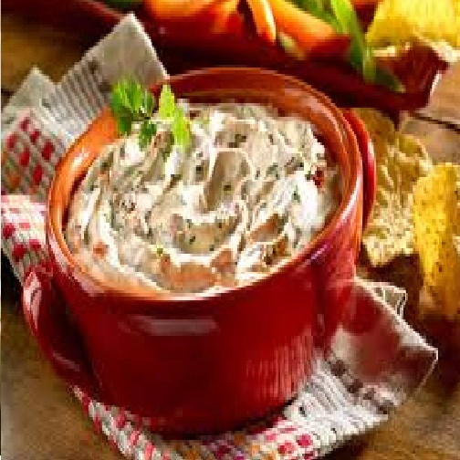

Receta para Dip Cremoso
INGREDIENTES:
- 200g de Queso Crema.
- 100g de Leche entera.
- 115g de Chipotle.
INSTRUCCIONES:
- Coloca en tu licuadora los 200g de Queso crema, los 100g de Leche Entera y los 115g de Chipotle.
- Licualos hasta que tengan el espesor de tu gusto.
- Ya licuado viertelo en un recipiente y a disfrutar